KAVIKULGURU INSTITUTE OF TECHNOLOGY AND SCIENCE RAMTEK SMART AGRICULTURAL & ORGANIC FARMING PORTAL-Session (2026-27)
NANDAPURI GRAMPANCHAYAT - Organic Farming
Kavikulguru Institute of Technology and Science, Ramtek (UGC Autonomous)
Department of Electronics and Computer Science
Under the Community Engagement Project
HOD of (Electronics and Computer Science)
Dr. Pankaj S. Ashtankar
B.E, M.Tech and Ph.D
Professor and Head Dean (Student Activities), KITS Ramtek
Under the Guidance of
MRS. Anjali Narad
M. Arch, Ph.D (Pursuing)
Assistant Professor, KITS Ramtek
Group Members
Mr. Varun Hedau
ES25057
Mr. Rohit Dighore
ES25052
Mr. Himanshu Shende
ES25021
Mr. Om Kharwade
ES25048
Mr. Pradyumna Fuke
ES25026
Mr.Vedanshu Tembhe
ES25023
What is Smart Agriculture?
Smart Agriculture uses simple modern digital tools, scientific data, and precision practices to make farming more predictable, productive, and water-efficient.

Digital Agriculture
Instant agricultural extension advisories, government subsidy notifications, and market prices delivered to smartphones.

Weather Forewarning
Accurate rainfall, humidity, and wind forecasting to plan sprays, fertilizer application, and harvesting.

Smart Water & Drip
Providing water strictly to the root zone via micro-drip systems, reducing wastage up to 60%.
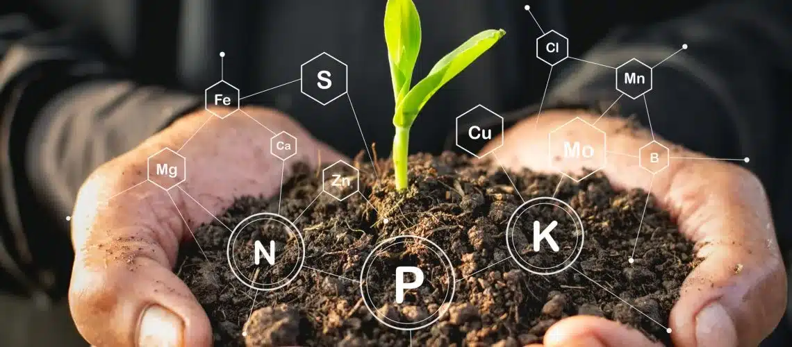
Soil Health Testing
Testing soil pH, organic carbon, and NPK levels prevents blind over-fertilization.
Crop Health Scans
Satellite vegetation indices (NDVI) allow detecting crop stress or dry patches across large plots in minutes.

Data-Backed Decisions
Tracking input costs and yield metrics digitally to evaluate true crop profitability.
7 Easy Steps to Start Smart Agriculture Today
Practical sequential roadmap to modernize your land gradually without high risk.
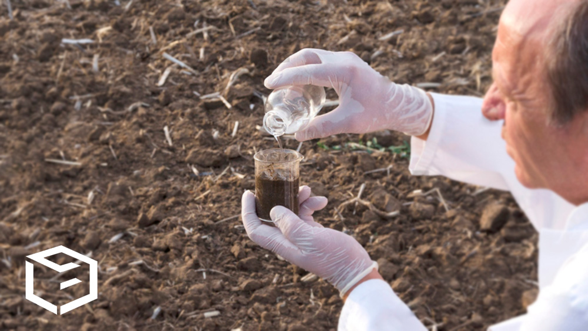
Soil Testing
Collect soil samples from 5 points on your farm and get a official Soil Health Card report.

Download Agri Apps
Install Plantix, Meghdoot (Weather), and Kisan Suvidha for instant alerts on smartphone.
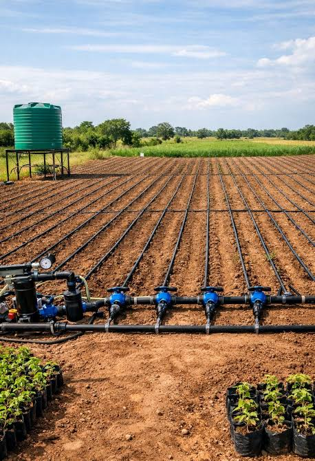
Drip Irrigation Setup
Apply for PMKSY subsidy and install targeted drip lines to save water and energy.
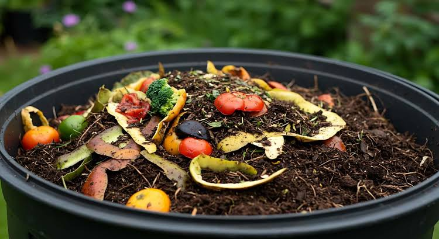
Organic Composting
Set up a vermicompost or NADEP pit using crop waste and cow dung to rebuild soil carbon.

Integrated Pest Mgmt
Deploy yellow sticky traps and Neem spray early before chemical pest outbreaks occur.
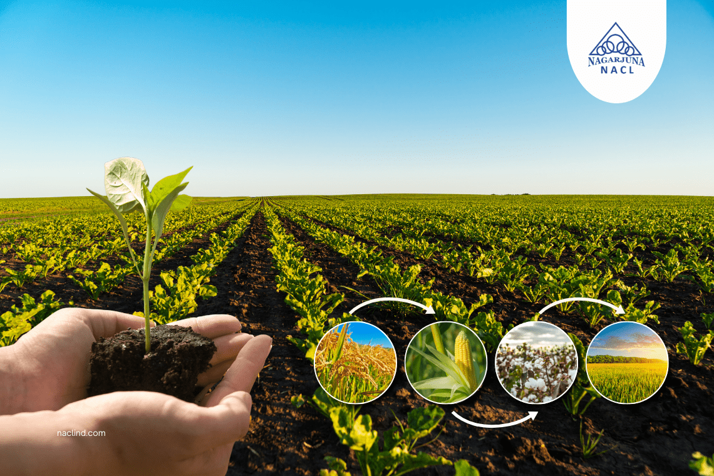
Rotation & Mulching
Cover soil beds with organic straw or plastic mulch to suppress weeds and lock in moisture.

Direct Market Linkage (e-NAM)
Register on e-NAM digital portal or join local FPOs to sell organic produce directly to buyers at higher rates.
The Modern Smart Agri Toolkit
Essential physical and digital tools modern farmers rely on for smart management.
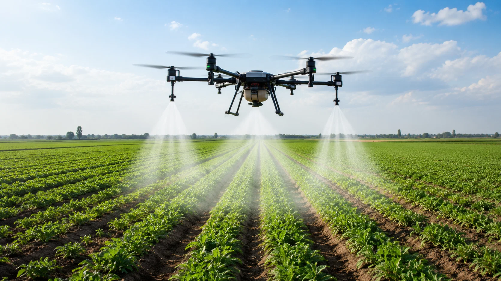
Kisan Spraying Drones
Precision drone spraying covers 1 acre in under 7 minutes, cutting chemical waste by 30% and protecting health.
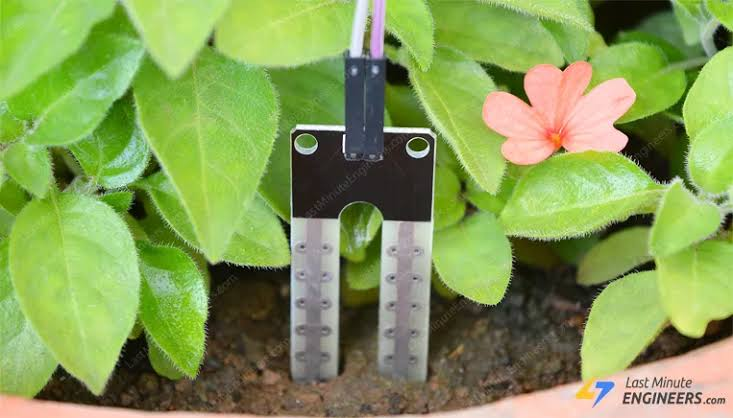
IoT Soil Moisture Sensors
In-ground probes transmit moisture levels live to mobile apps, indicating exact irrigation timing.
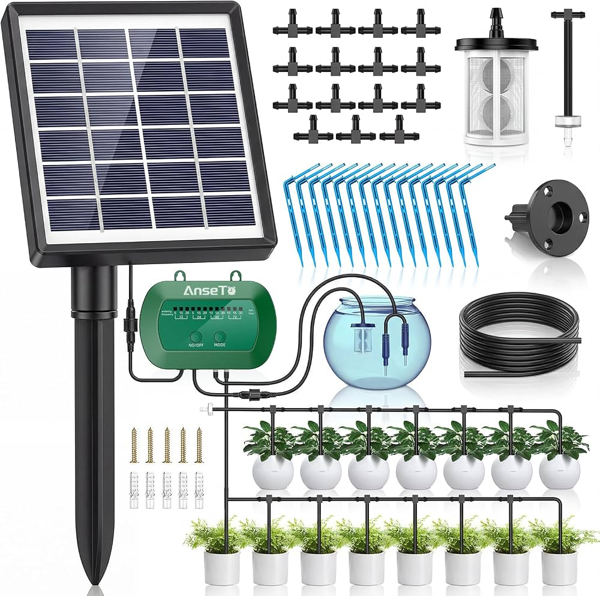
Solar Drip Controllers
Solar-powered automatic valves schedule water delivery during optimal morning or evening hours.
Smart Agri Mobile Apps
Apps like Meghdoot & Plantix provide instant weather alerts, pest diagnosis, and mandi rate comparisons.
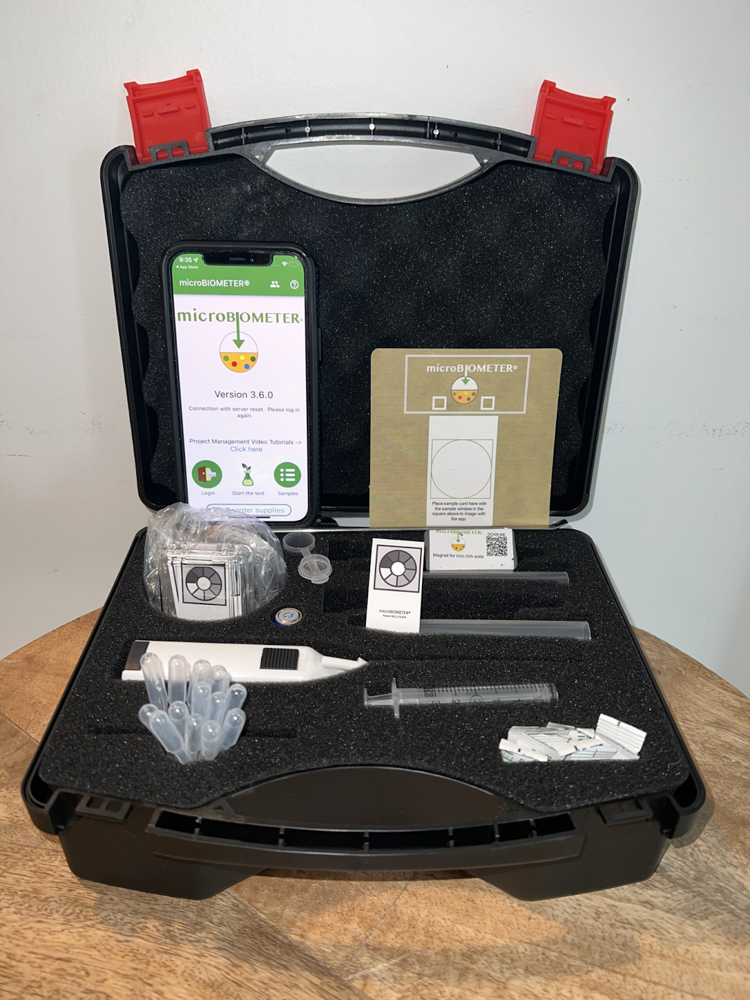
Portable Soil Testing Kits
Handheld digital pH and NPK meters offer fast instant soil assessments right on the field.

Bio-Inoculants & Organics
Liquid Azotobacter, Rhizobium, and Trichoderma cultures enrich soil microbial life without harsh chemicals.
Real, Practical Benefits for Indian Farmers
How combining technology and organic methods transforms farm economic security.
Input Cost Reduction
Targeted organic fertilizers and precision spraying significantly lower recurring chemical expenses.
Water Conservation
Drip irrigation and straw mulching keep water in root zones, reducing pumping electric costs.
Yield & Quality Rise
Healthy organic soil structure yields uniform crops that command premium prices in local markets.
Soil Fertility Security
Prevents land salinity, restores beneficial earthworms, and preserves soil health for future generations.
Smart Tech + Organic Practices
Combining modern tech with traditional organic wisdom yields maximum sustainability.
Precision Bio-Spraying
Use Kisan drones to evenly distribute biological pest controllers like Neem oil or Trichoderma with minimal waste.
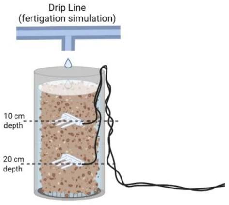
Moisture-Guided Fertigation
Sensor data triggers drip systems to feed liquid Jeevamrut directly to plant roots at exact intervals.

AI Organic Pest Care
Scan early leaves with Plantix app to receive exact organic bio-pesticide dosage recipes before pests multiply.
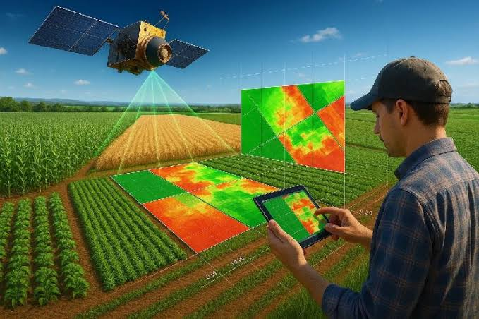
Satellite Biomass Tracking
Monitor organic mulch decomposition and crop nitrogen absorption over large acreage via free satellite imagery.
Key Government Farming Schemes
Government welfare and subsidy schemes promoting Smart Agriculture & Organic Farming for farmers.
Paramparagat Krishi Vikas Yojana (PKVY)
Financial assistance of ₹50,000 per hectare for 3 years is provided for organic inputs, certification, and cluster formation.
Digital Agriculture Mission
Supports AI, drones, satellite imagery, and Digital General Crop Estimation Surveys (DGCES) for modern data-driven farming.
Sub-Mission on Agricultural Mechanization (SMAM)
Financial assistance and subsidies for purchasing Kisan Drones, smart equipment, and establishing Custom Hiring Centers.
Soil Health Card Scheme
Provides customized recommendations on nutrient dosage and organic soil amendments based on bi-annual soil testing.
PM Krishi Sinchayee Yojana (Per Drop More Crop)
Offers up to 55%-80% subsidy on micro-irrigation tools like drip and sprinkler kits to conserve water.
PM-KISAN Samman Nidhi
Direct income support of ₹6,000 per year transferred directly to Aadhaar-linked farmer bank accounts.
8 Common Symptoms to Spot Early
Identify field issues early using real visual cues on leaves and roots.
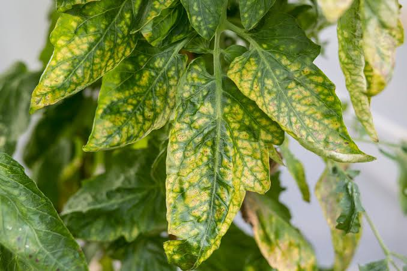
Yellowing Older Leaves
Deficiency of Nitrogen (N). Add organic compost or Jeevamrut.
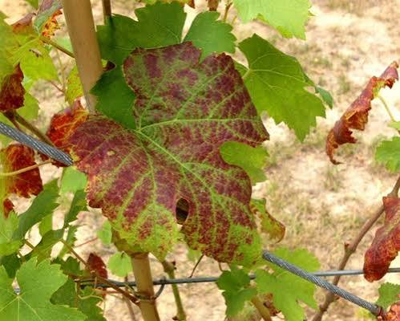
Purple / Red Leaf Margins
Phosphorus (P) deficiency common in cold wet soils.
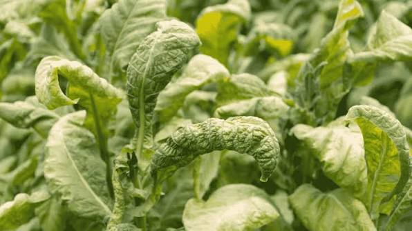
Burnt & Curling Tips
Potassium (K) shortage or salt build-up from over-watering.
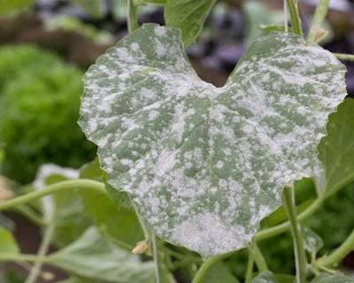
White Powdery Spots
Powdery Mildew fungal infection. Spray diluted sour buttermilk/milk bio-solution.
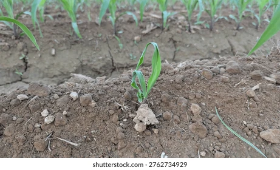
Stunted Young Shoots
Zinc or Micronutrient lock in high pH soils. Apply bio-chelates.
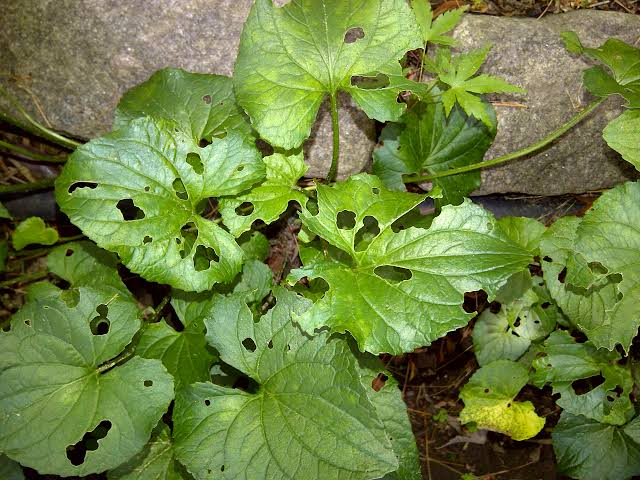
Holes in Leaves
Caterpillars or armyworms. Apply Neem seed kernel extract (NSKE).

Wilting Wet Soil
Root rot or vascular wilt. Improve drainage and soil Trichoderma aeration.
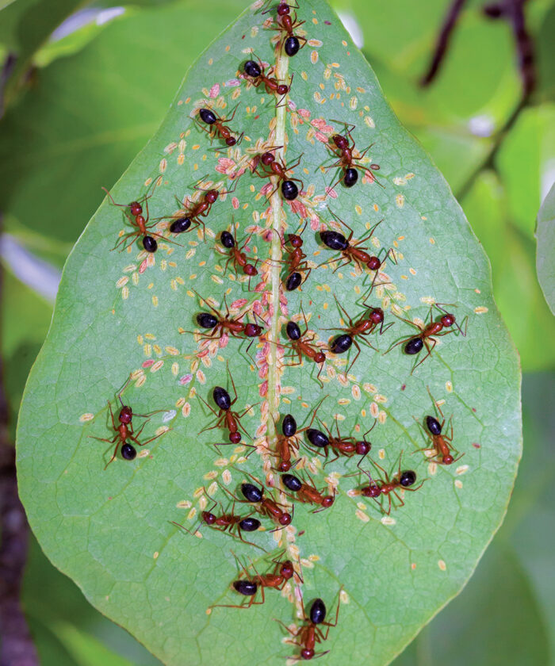
Sticky Leaves & Ants
Aphid or Mealybug honeydew secretion. Spray soap-water or Neem solution.
Meet Plantix — Mobile AI Crop Doctor
Plantix is a free agricultural smartphone application that uses Artificial Intelligence to diagnose crop diseases, pest attacks, and nutrient deficiencies directly from leaf photos.
- ✓ Instant Diagnosis: Snap a photo to detect fungal, bacterial, or pest attacks.
- ✓ Organic Solutions: Receive organic treatments like Neem oil and Trichoderma dosage.
Plantix Leaf Diagnosis
Quickly identify crop symptoms before pest outbreaks spread across fields.
Open Plantix Website →What is Organic Farming?
Organic farming avoids synthetic chemicals and relies on natural biological processes, compost, microbial biodiversity, and ecological crop rotation.
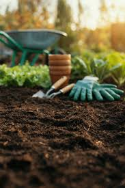
Natural Soil Care
Feeding soil biology with organic matter rather than quick chemical shots.
Composting
Converting crop stalks, dry leaves, and cow dung into organic humus.
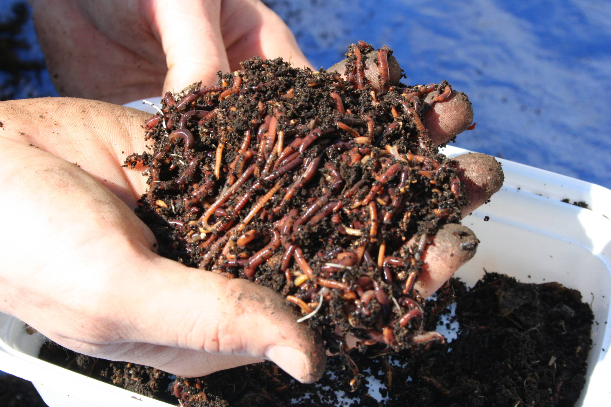
Vermicomposting
Utilizing earthworms to convert organic residues into enzyme-rich vermicast.
Crop Rotation
Alternating heavy feeders with legumes to fix atmospheric nitrogen naturally.
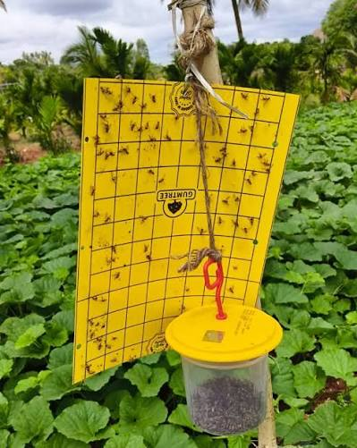
Bio Pest Control
Using Neem oil, Dashparni Ark, and sticky traps without harming bees.

Biodiversity Borders
Planting marigolds on farm borders to trap pests and nourish beneficial insects.